Superficie de costo de conectividad
Valor social y conectividad
Alto
Bajo
La superficie de costo o de resistencia indica la dificultad que tienen las especies para moverse a través del territorio. Los valores altos indican mayor dificultad.

